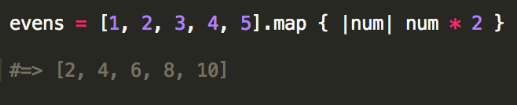

Enumerable's Map Method
Posted on 28 Jun 2014 by Kyle Daugherty
Ruby classes, like Array and Hash, include what is known as the Enumberable module. The Enumera-what? Basically, the Enumerable module is a package of several methods that can be mixed in with other classes. Ruby programmers are lazy and strongly believe in the DRY principle which means don't repeat yourself (or your code). So, instead of having to write the methods many different times, they can be written just once and included in other classes. In the case of the Enumerable module, it can be included in any class that has its own #each method.
One of the most useful methods from the Enumerable module is #map. The method iterates over each element in the object it was called on and passes it to the given block. It will return a new array containing the result returned by the block each time it runs. Essentially, the method is performing something on each element of the original enumerable object and returning the result into a new array. Let's take a look at an example.
Running the above code would iterate over each number in the array and multiply it by 2 and would then store the result of each calculation into a new array. As a result, the new array would include a list of even numbers - 2 through 10.
Even though this was a very basic example, I trust that you can see how useful the #map method can be in a real world application.